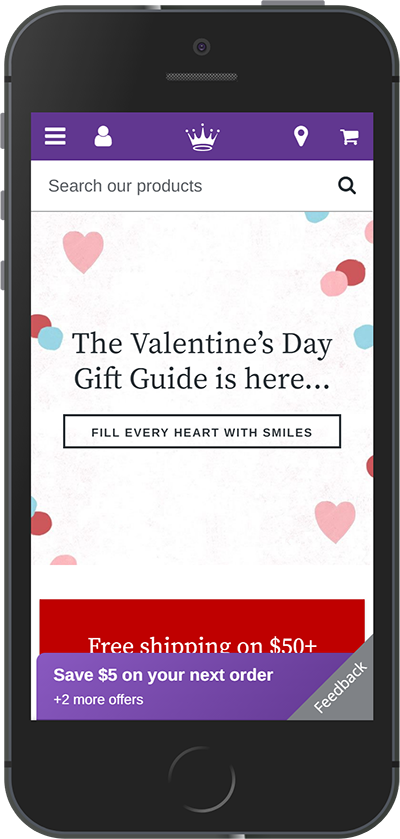

Typography
Hallmark.com
Typography is the art and science of the way words look and how we respond to it. It is very important to match your fonts and logos to the feeling you want to portray. In the examples that you find on the other pages of this assignment you can see that even when there are different fonts used, the most important element of your text is that it must be easy to read. For this reason, you will not generally find websites done in a flowery or flowy script font. Hallmark is not an accounting firm, nor is it a medical website, it is company that is meant to connect with its customers in a heart to heart fashion as opposed to a meeting of the minds. They still need to have their site easy to read. They soften the look of their website by using a serif font in their headings. It is still professional and can even be serious, but it conveys a feeling of grace and comfort and tradition.